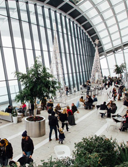
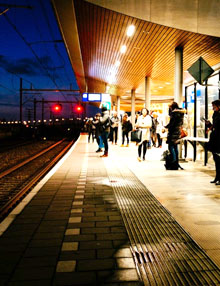
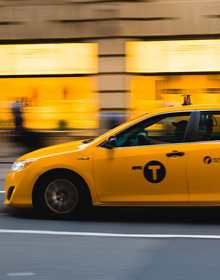
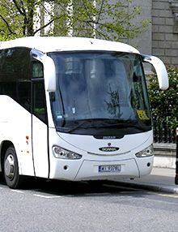
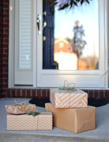
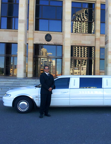
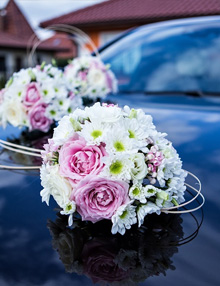

Services

Receptions at airports
in all airports in Belgium.
in all airports in Belgium.

Receptions in stations
Gare noon Central Station or North Station, taxi Brussels offers you a vehicle that will take you to your destination
Gare noon Central Station or North Station, taxi Brussels offers you a vehicle that will take you to your destination

Any transfer to Brussels, to the provinces or abroad
No worries, either, taxi Brussels can undertake long-distance trips at competitive prices.
No worries, either, taxi Brussels can undertake long-distance trips at competitive prices.

Transfers groups
Brussels Taxi transfers can be arranged for groups in providing you with taxis minibuses with 6 to 20 people (depending on demand and availability)
Brussels Taxi transfers can be arranged for groups in providing you with taxis minibuses with 6 to 20 people (depending on demand and availability)

Services packages
Taxi Brussels ensures and organizes also transfer your package from one point to another.
Taxi Brussels ensures and organizes also transfer your package from one point to another.

Limousine services and VIP
Taxi Brussels offers very comfortable cars,
Taxi Brussels offers very comfortable cars,

Ceremonies
Taxi Brussels with luxury vehicles and professional drivers will be happy to serve you.
Taxi Brussels with luxury vehicles and professional drivers will be happy to serve you.